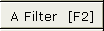
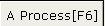
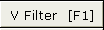

|
Capturing to SVCD tutorial, by Jens 1.Capturing I bought a Pinnacle PCTV pro which should be able to capture a software encoded MPEG2-stream in DVD quality. There is a audio cable from the TV card into the soundcard - external or internal. To capture under Linux i found Roman Hochleitner's NuppelVideo really useful. The important thing on it is the output of copied frames. A copied frame is generated from the previous frame, if the actual frame (from video) is lost. This is needed to keep audio in sync. On the end of the capturing process you will see, what you got. If you have zero, one or two copied frames, you have a excellent source for the next steps. If you have many copied frames (often many of them come together), you have problems with your hardware or worked too hard on your OS while capturing ;-) To use this feature you need to apply two extra options to the bttv module in the kernel. You can do that through the file /etc/modules.conf The record program nuvrec will generate one or more output files, each of 2 GB size. Cause i find this not very handy, i've written this patch. With argument "-2" you will get the original behaviour, without this argument the output will be one big file. nuvrec will write out a RTJPEG compressed audio/video stream - it's the smaller brother of the MJPEG format. You have to choose a channel with some other program (i.e. with xawtv), end this program and start nuvrec. The quality over the coax cable is not really good. So i use the composite video input on my TV card and the line in on my ;Ensoniq ES1371 sound card. To get the same audio profile each time, i have created a special file for that. Depending on your sound system, you may want to comment out the OSS/kernel part and uncomment the Alsa one.
Capturing sequence with ffv1rec Alternatively, if you have a fast cpu, you can use ffv1rec, which gives better picture with a smaller size at the cost of a much higher CPU consumption. The previous chaper basics still applies as the generated stream is a modified nuv file. 2.Encode to Mpeg2/SVCD The aim of this paragraph is to proper a edl/project file containing the original captured file, with all commercials removed and video cleaned up as much as possible. First we will create an index of the file to allow fast reloading later. Open the file File-> Open video : video.nuv. Upon loading completion, you will be prompted to save an index : video.nuv.idx Reload the generated index
For each unwanted part, set the markA at the beginning of the part you want to remove by pressing That selects an area for action [markA,markB[. Press CTRL+X. And repeat to remove beginning/ ending crap and all commercials. When satisfied with the result, save the edl file by using the Edit ->save edit list menu. For example, video.edl. Now we have an edl file containing only the interesting part of the video. Reload the edl, and set the audio filters using the  Select Normalize WAV, we wish to have all SVCD's with the same base volume. Don't forget to press the . Finally, don't forget to select a codec, in our case we want to have mpeg audio. So press the audio codec, and select FFmpeg mpeg audio and configure. For example, 224 kbits stereo. Last step: encoding! . File->save audio : video.mp2. Alternatively, you could use the internal toolame library, the quality is generally better.The first step is to reload the workbench :Edit->Load Edit List. We will crop the video, apply some filters and resize the video to SVCD. Let's go to the filter chain, either by using F1 or . The first filter will be crop to remove black borders or flickering part, don't hesitate to cut deep. Noise will make the encoding harder and drop the quality You may also want to deinterlace the movie. Depending if you use Pal or NTSC and the source you may want Deinterlace, Pal Smart, ivtc .... Try them using the preview and pick the one you prefer. When happy, click the SVCD Res button to resize it to 480*xxx. The source is considered as being 1:1, do it manually if it is not the case Last step : encoding. Select video codec, SVCD and configure. If you have plenty of time, select 2 pass, else CQ = 7 for example. In both cases set the max bitrate to 2300 to be within SVCD specs. Don't forget to set video mode to process! File / save video: video.m2v 3.Multiplex audio and video There are two programs to do that:
4.Build SVCD image You cannot write the files directly to the CD-R. To build a compliant SVCD you should use vcdimager:
5.Burning the image Of course replace sg0 by your actual cd-writer device.6.Extracting back the Mpeg file Sometimes you may need the "original" MPEG files back from SVCD. From the Hard Disc: From the CD-R:7.Final words If you have problems with the resulting SVCD, you may want to try one of these :
|
 , then go the first frame after the last frame of the commercial and press .
, then go the first frame after the last frame of the commercial and press .